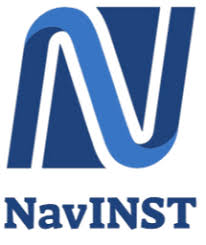

Research Intern
NavINST Lab · Royal Military College
May 2025 – Oct 2025
At NavINST, I migrated over 10,000 ROS1 sensor logs into ROS2, helping unify the lab’s data pipeline and improve developer workflows. I calibrated LiDAR, RADAR, and stereo camera systems into a single ROS2 point cloud with sub-centimeter precision and built Python automation to streamline calibration, reducing setup time by roughly 40%. I also benchmarked SLAM and perception performance in GPS-denied environments to support autonomous navigation research.